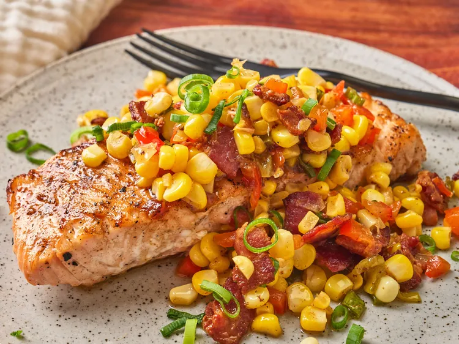

Grilled Salmon with Bacon and Corn Relish
Home

Description
You are really going to love this exciting and vibrant new recipe for
salmon. The grilled salmon is dressed up with an easy, summery bacon
and corn relish. Did I mention there will be bacon? Oh, yeah!
Ingredients
- 6 strips bacon, cut crosswise into ½-inch pieces
- 2 ears white corn
- 1/4 cup chopped green onions (white and light green parts),
green tops chopped and reserved
- 1/4 cup diced red bell pepper
- 1 tablespoon rice wine vinegar, or more to taste
- 2 teaspoons olive oil
- 2 pinches cayenne pepper, or to taste, divided
- salt and ground black pepper to taste
- 2 (8 ounce) center-cut boneless salmon fillets
- 1/2 teaspoon vegetable oil
- 1 cup fresh spinach leaves (optional)
Instructions
- Preheat an outdoor grill (preferably charcoal) for high heat
and lightly oil the grate.
- Cook bacon in a skillet over medium heat, stirring
occasionally, until browned and crisp, 8 to 10 minutes.
- Meanwhile, cut kernels from cobs into a large bowl using a
sharp knife held at a 45-degree angle. Scrape cobs with the
back of the knife into the bowl to release the juices.
- Add 1/4 cup green onions (white and light green parts) and red
bell pepper to bacon; cook and stir until vegetables just
become tender, about 2 minutes. Stir in corn; cook until warmed
through. Season with rice wine vinegar, olive oil, a few
chopped dark green onion tops, 1 pinch cayenne pepper, salt,
and black pepper. Remove from heat.
- Coat both sides salmon fillets with vegetable oil; season with
remaining 1 pinch cayenne pepper, salt, and black pepper.
- Cook on the preheated grill until good grill marks appear,
fillets flake easily with a fork, and salmon is still slightly
pink in the center, about 5 minutes per side. Cracks in salmon
flesh as you cook the fillets allows you to see doneness in
the middle.
- Divide spinach leaves between two plates; top each with a
salmon fillet and 1/2 bacon relish. Garnish with a few green
onion tops.